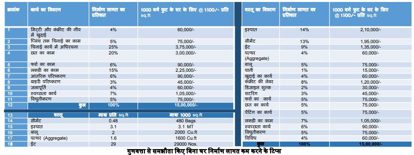

आवासीय भवन की औसत निर्माण लागत कई कारकों पर निर्भर करती है, जैसे स्थान, आकार, डिजाइन, उपयोग की गई सामग्री और श्रम लागत, जो शहरों के अनुसार भिन्न होती है। निर्माण खर्च परियोजना के चरण और कार्य के प्रकार से प्रभावित होते हैं। आमतौर पर, श्रम कुल लागत का 20-35: होता है श्रम और निर्माण लागत का अनुपात लगभग 30:70 या 40:60 होता है। इन वित्तीय पहलुओं को समझना आपके सपनों का घर वास्तविकता में बदलने के लिए महत्वपूर्ण है। सामग्री, श्रम और अतिरिक्त खर्चों का सामान्य अनुपात 70:25:05 होता है। निर्माण के विभिन्न चरणों में लागत का अनुमान चरण और कुल खर्च का प्रतिशत देखकर लगाया जा सकता है। नीचे दी गई तालिका विभिन्न कारकों के आधार पर इसका विश्लेषण करती है।

सही योजना और डिजाइनः निर्माण के दौरान बदलाव और दोबारा काम से बचने के लिए विस्तृत योजना पर ध्यान दें। लेआउट को अपनी आवष्यकतानुसार बनाएं और प्राकृतिक प्रकाश, वेंटिलेशन और ऊर्जा दक्षता जैसे कारकों पर विचार करें ताकि संसाधनों का कुशलता से उपयोग हो सके और बर्बादी कम हो सके।
सामग्री चयनः टिकाऊ और लागत-कुशल सामग्री का चयन करें। विभिन्न आपूर्तिकर्ताओं से कीमतों की तुलना करें, अपनी आवश्यकताओं के अनुसार विकल्प खोजें और गुणवत्ता से समझौता किए बिना लागत को कम करने के लिए स्थानीय उपलब्ध विकल्पों पर विचार करें।
परियोजना का प्रभावी प्रबंधन करें: सामग्री और श्रम का प्रभावी ढंग से प्रबंधन कर सके। अच्छा शेड्यूलिंग और समय पर सामग्री की खरीद, देरी और लागत के बढ़ने से रोकते हैं।